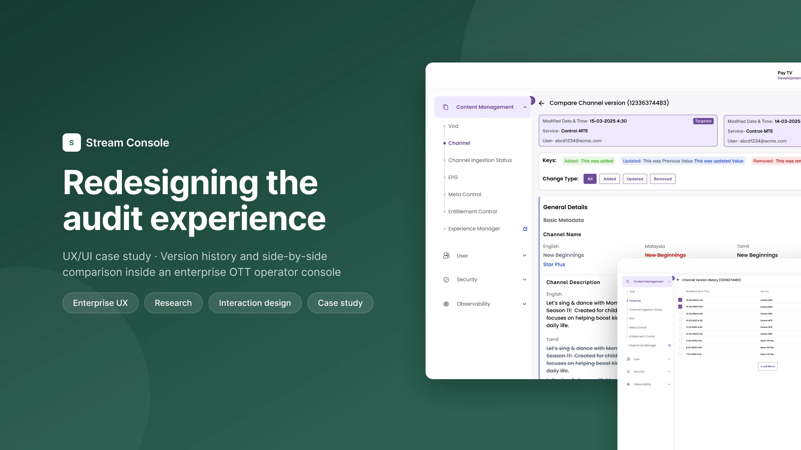

Support shadowing
Watched how operators investigate live issues and where they lose time.
Operators use audit history to find out what changed on a channel and who changed it. I moved that history into the channel page and added a side by side comparison, so operators no longer leave their task, re-enter IDs or compare values from memory.
NoteClient branding has been removed from all screens. Names and emails are placeholders.

Operators use audit history to troubleshoot and to stay compliant across thousands of channels, VOD assets, households and devices. When something looks wrong on a channel, the first question is always the same: what changed, when, and who changed it?
The old audit log was a separate module. It listed every action from every service in one table, with no link back to the channel the operator was looking at.
Research with support, stakeholders and developers, then flows and layout exploration.
Final UI, all edge states and an annotated handoff file.
Version History and comparison live on the channel page.
This is an internal tool, so there were no formal usability panels or analytics. I worked from four sources and kept what I saw separate from what I inferred.
Watched how operators investigate live issues and where they lose time.
What operations teams need from history, and why.
What the API stored for each version and what it could compare.
How people move between the channel and the audit module.
"Half my day goes into figuring out what changed and who touched it last. I don't need more data. I need less digging."Paraphrased from a support shadowing session, not a recorded quote
Operators look for history while they are already on a channel, not from the audit module.
Locating the right two records took longer than reading them.
The old module had no way to see two versions together.
What operators need is the difference, not every record.
| Heuristic | Score | What I saw |
|---|---|---|
| Recognition rather than recall | 1 | IDs and entity type had to be remembered before any result appeared |
| Efficiency | 2 | Every investigation meant switching modules and comparing by hand |
| Information hierarchy | 2 | Dense metadata, all with the same visual weight |
| Status, error prevention, learnability | 3 | Usable, but nothing guided the operator |
| Consistency | 4 | Matched the rest of the console |
These are my own scores from a single expert review, used to prioritise. They are not user ratings.
Start: an operator is on a channel and needs to know what changed. Goal: see the differences between two versions.
The old module's design file has six screens: a listing, a record detail, a filter panel, a filter preview, a filtered listing and selected filters. None of them compares two versions. The new flow has four screens:
New flow
| Aspect | Before | After |
|---|---|---|
| Where it starts | A separate audit module | The channel the operator is already on |
| Identifiers | Tenant ID, Entity ID and entity type typed in | None. The channel is already known |
| Comparing two versions | Not possible. Records were opened one at a time and compared from memory | Two versions side by side |
| Reading the change | Every field with the same weight | Added, updated and removed values labelled |
I compared four layouts against two tests: does it work for a channel with dozens of versions, and does the operator keep their place in the channel?
Sideways scrolling became unworkable for channels with long histories.
Felt quick at first, but had no room for a real side by side comparison.
Gave the most space, but operators lost their place in the channel.
Kept people in context and scaled to any number of versions.
The trade-off. A modal would have avoided changing the channel page, but it had no room for a real side by side comparison. Option D meant changing the channel page itself, and it was the only option that kept people in context and worked for long histories.
An inline change log was compact but made it hard to see the before and after together. A sequential list of changes was easy to build but needed a lot of scrolling. Side by side was the easiest to scan, so I chose it and accepted that it needs a wide screen.
Picking from a list removes the recall step entirely.
Most investigations start from the latest change, and long histories stay fast.
Compare is enabled only when two versions are ticked. With 0, 1 or 3 selected it stays disabled.
Along with the main flow I designed the states an operator can hit on a real channel.
A channel that has never been changed.
Nothing to compare against yet.
The request to compare two versions does not return.
One of the selected versions no longer exists.
The operator is not allowed to see this history.
Each of these has its own screen in the handoff file, so engineers never had to guess what to show.
Annotated Figma files, every UI state, selection rules, the API field mapping and edge cases.
Regular pairing with developers, API mapping with the solution architects, and design QA with the QA team before release.
The same pattern was designed so it could later serve VOD assets, households and catalogues, not only channels.
Keeping people on the page they started from drove most other decisions.
Labelling each change made dense audit data far easier to read than a better table would have.
A visual timeline, search by user or date, PDF export for compliance, change alerts, comparing more than two versions, and comments on a change. None of these are designed yet.